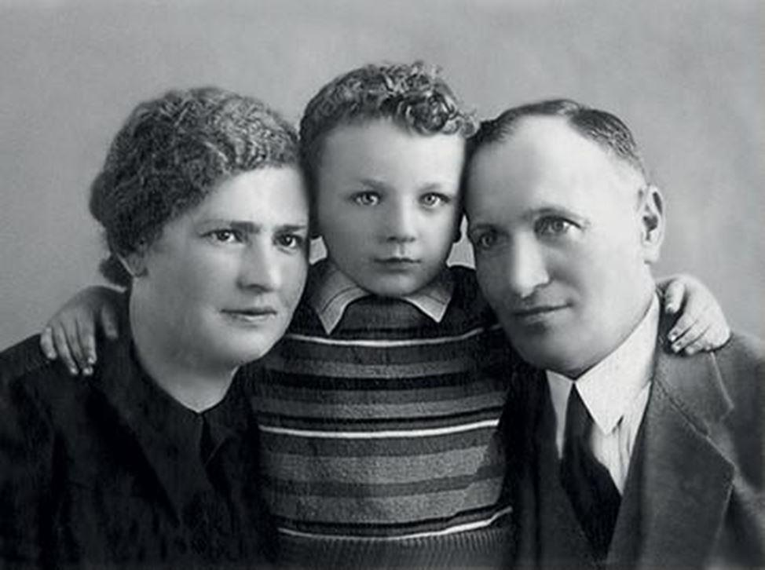
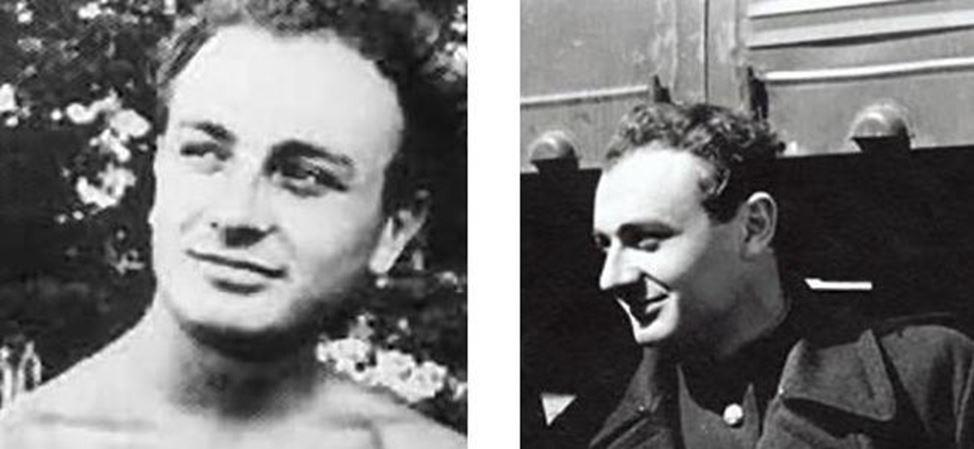
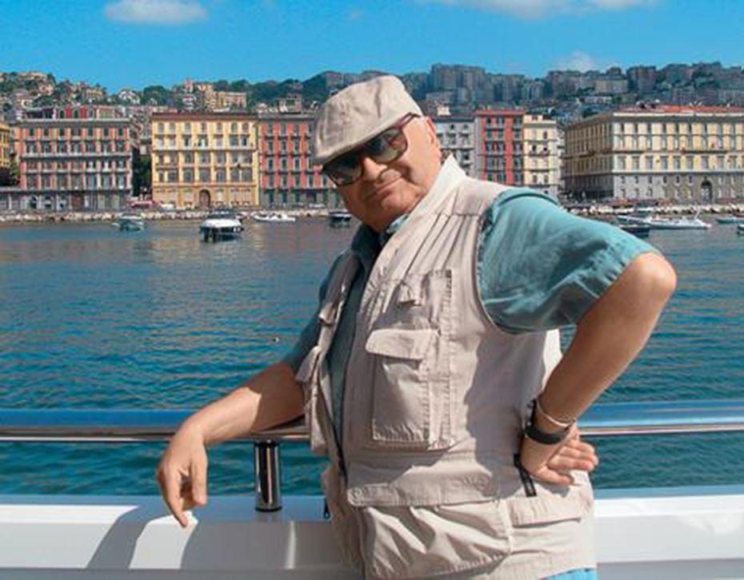
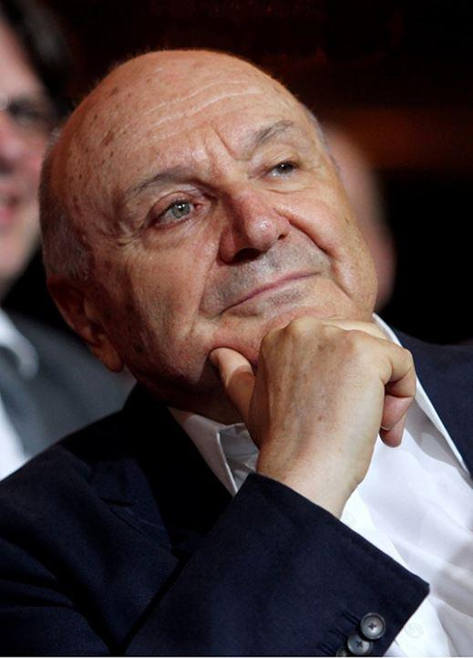

Mikhail Mikhailovich Zhvanetsky est un écrivain satiriste, auteur de livres et de miniatures étincelantes, interprète de ses œuvres, lauréat de grands prix, de titres prestigieux et juste un citoyen talentueux d'Odessa.
Les citations et les déclarations spirituelles de l'auteur sont familières à beaucoup de Russes. Mikhail Mikhailovich Zhvanetsky nous a quitté le 6 novembre dernier mais ses phrases célèbres, remplies de sagesse, d'observation et de perspicacité du monde, demeureront éternelles.
D’un père chirurgien et d’une mère dentiste, Mikhail Zhvanetsky est né le 3 juin 1934 à Odessa. Avec le déclenchement de la Grande Guerre patriotique, son père est enrôlé dans l'armée, en tant que médecin militaire, il recevra un ordre de l'Étoile Rouge en 1942. La famille rentre à Odessa de l'évacuation après la libération de la ville en 1944. Mikhaïl Jvanetski est scolarisé à l' école n° 118e secondaire pour garçons.
Il a commencé à composer des monologues et des miniatures en tant qu'étudiant. Sur quoi a donc écrit Misha Zhvanetsky ? Sur les femmes, la nature, les problèmes quotidiens, etc.
En 1960, il rencontre A. Raikin. Le chef du Théâtre des Miniatures de Leningrad s'est familiarisé avec les œuvres du satiriste d'Odessa. Certaines d'entre eux ont été inclus dans le répertoire du collectif. En 1964, Mikhail arrive à Leningrad, où il trouve un emploi au théâtre d’A. Raikin. Après 6 ans, il retourne à Odessa et créé avec V. Ilchenko, son propre petit théâtre.
La carrière de Zhvanetsky fut associée à l'organisation Rosconcert (en tant que metteur en scène), à la maison d'édition Molodaya Gvardiya (début des années 1980) et au Théâtre des miniatures de Moscou (en tant que directeur artistique).
MM Zhvanetsky est l'auteur de nombreux monologues, qu'il a écrits spécifiquement pour R. Kartsev, S. Yursky, Raikin Arkady et d'autres artistes. Il est également l’auteur de plusieurs livres, dont "Odessa dachas", "Un an sur deux", "Hot summer"...Il fait partie de ces auteurs qui parviennent à donner aux pensées une forme laconique, sarcastique et absolument complète. Et surtout, dans ses caricatures tout le monde est appelé à se reconnaître – même si, parfois, cela ne nous plait pas vraiment.
Nous avons choisi les déclarations et les aphorismes les plus brillants de Mikhail Zhvanetsky.
1. Si votre cul a été léché, ne vous détendez pas – c'est un lubrifiant !
2. L'idée lui est venue à l'esprit et maintenant elle cherche constamment le cerveau.
3. Les gens sont divisés entre ceux sur lesquels vous pouvez compter et ceux que vous devez traiter avec mépris.
4. Si vos proches ou amis ne vous appellent pas pendant une longue période, c'est qu'ils vont bien.
5. Une femme est une créature qui a besoin d'être aimée ! Si vous ne savez pas aimer – asseyez-vous et soyez amis !
6. Quel dommage que vous nous quittiez enfin ...
7. Une seule tête, c'est bien, mais avec le corps, c’est meilleur.
8. La sagesse ne vient pas toujours avec l'âge. Il arrive que l'âge vienne seul.
9. C'est difficile d'être la dernière chienne – il y a toujours quelqu'un qui est attaché derrière !
10. L'alcool à petites doses est utile dans n'importe quelle quantité.
11. C'est dommage que vos rêves deviennent réalité pour les autres !
12. Chacun a raison à sa manière. Mais pas pour mon avis.
13. Désolé pour ce que je dis lorsque vous m’interrompez.
14. De deux maux, je choisis celui que je n'ai pas essayé avant ...
15. Que le temps passe vite. Je n'ai pas eu le temps de me réveiller que je suis déjà en retard au travail.
16. Est venu – merci, parti – merci beaucoup ...
17. Si on vous dit que vous êtes une personne aux multiples facettes, ne vous croyez flatté. Peut-être que cela signifie que vous êtes à la fois un connard, un bâtard et un parasite.
18. Mieux vaut être couvert de sueur sept fois que de gel une fois !
19. Dans certains, les deux hémisphères sont protégés par le crâne, dans d'autres – par un pantalon.
20. Ne me dites pas quoi faire et je ne vous dirai pas où vous devez aller.
21. Il ne suffit pas de connaître sa propre valeur, il faut aussi être également demandé.
22. Le bien triomphe toujours du mal, ce qui signifie que celui qui a gagné est bon.
23. Vous ne dormez pas toute la journée, vous ne mangez pas de la nuit – bien sûr, vous êtes fatigué ...
24. Une conscience claire est le signe d'un mauvais souvenir.
25. Tout dans ce monde est relatif. Par exemple, la durée d'une minute dépend du côté de la porte des toilettes devant lequel vous vous trouvez.
26. Ce n'est que le jour de votre anniversaire que vous découvrirez combien de choses inutiles il y a dans le monde.
27. On a fécondé ..., puis cela a grandi ...
28. N'exagérez jamais la stupidité des ennemis et la loyauté des amis.
29. Si vous vous disputez avec un idiot, il fait probablement de même.
30. La chance sourit aux courageux ... Et puis elle se moque d'eux pendant longtemps !
31. Un optimiste croit que nous vivons dans le meilleur des mondes. Le pessimiste craint que ce soit le cas.
32. Rien ne fait de mal à une personne comme des éclats de son propre bonheur.
33. Ce n'est pas grave s'ils se moquent de toi. C'est bien pire quand les gens pleurent pour toi.
34. Notre liberté ressemble à un feu de signalisation avec trois feux allumés à la fois.
35. Les émotions positives sont celles qui surviennent si vous ignorez tout.
36. S'il y a quelqu'un qui est prêt à déplacer des montagnes, d'autres le suivront sûrement, prêts à lui tordre le cou.
37. Véritable solitude – lorsque vous vous parlez toute la nuit et qu'on ne vous comprend pas.
38. La culture physique prolonge la vie de cinq ans, mais ces cinq années doivent être passées à la salle de sport.
39. Une personne décente peut être facilement reconnue par la façon dont elle fait les lâchetés de manière maladroite.
40. Telle est notre vie : si vous ne vous y habituez pas, vous mourez, si vous ne mourez pas, vous vous y habituerez.
41. Il vaut mieux faire le travail difficile avec amour que faire l'amour avec difficulté.
42. C'est un grand bonheur de voir une vraie vie héroïque sanglante et de ne pas y participer.
43. Dès que vous suivez une diète, quelqu'un s'assoit immédiatement tout près pour bâfrer.
44. Il vaut mieux garder le silence et avoir l'air idiot que de parler et de ne laisser aucun doute sur ce point.
45. N'importe quelle voiture durera pour le reste de votre vie si vous la conduisez assez audacieusement.
46. Le plus haut degré d'embarras – deux regards se rencontrent dans le trou de la serrure.
47. J'ai dit : soit je vivrai bien, soit mes œuvres deviendront immortelles. Et la vie s'est à nouveau tournée vers les œuvres.
48. Suis-je heureux ? À différents moments, je répondais à cette question de différentes manières, mais toujours par la négative.
49. Ne conduisez pas votre voiture plus vite que votre ange gardien ne vole.
50. Tous mes amis veulent que je me marie, parce que les gens détestent quand quelqu'un est bon.
51. Le bonheur, c'est de voir les toilettes et d'y atteindre.
52. Il n'y a pas de fins heureuses. Si tu es heureux, alors, ce n’est pas la fin.
53. Pour sauver un homme qui se noie, il ne suffit pas de tendre la main, il faut qu'il donne en retour la sienne.
54. L'esclave commence ainsi : « Ils sont responsables du fait que je ... » alors que l’homme libre : « Je suis responsable du fait que je ... ».
55. Il y a toujours une place pour l'exploit dans la vie. Il faut avoir juste besoin d'être loin de cet endroit.
56. Ne demandez pas l'opinion de ceux qui sont d'accord, demandez à ceux qui s'y opposent.
57. Faites ce que vous dites ! Mais ne dites pas ce que vous faites.
58. Ayez une conscience et faites ce que vous voulez.
59. Bien sûr, le temps guérit, mais quand vous serez guéri, il vous quittera aussi.
60. La haine est un amour mutilé par l’offense.
61. La vie consiste à s'élever, à descendre et à vivre avec une marge de hauteur.
Partager cette page